The aim of this tutorial is to demonstrate the solution of the time-harmonic equations of linear elasticity in cartesian coordinates. These equations are useful to describe forced, time-harmonic oscillations of elastic bodies.
The implementation of the equations and the documentation were developed jointly with David Nigro. |
Theory
Consider a linearly elastic body (of density  , Young's modulus
, Young's modulus  and Poisson's ratio
and Poisson's ratio  ), occupying the region
), occupying the region  whose boundary is 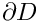. Assuming that the body performs time-harmonic oscillations of frequency of
whose boundary is 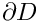. Assuming that the body performs time-harmonic oscillations of frequency of  its motion is governed by the equations of time-harmonic linear elasticity
its motion is governed by the equations of time-harmonic linear elasticity
![\[ \pmb{\nabla}^*\cdot\pmb{\tau}^*+ \rho \mathbf{F}^*=-\rho\omega^2 \mathbf{u}^*, \]](form_6.png)
where the 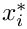 are the cartesian coordinates, and the time-periodic stresses, body force and displacements are given by 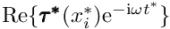, 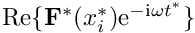 and  respectively. Note that, as usual, the superscript asterisk notation is used to distinguish dimensional quantities from their non-dimensional counterparts where required.
respectively. Note that, as usual, the superscript asterisk notation is used to distinguish dimensional quantities from their non-dimensional counterparts where required.
The body is subject to imposed time-harmonic displacements 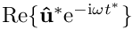 along  , and to an imposed time-harmonic traction 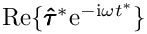 along
, and to an imposed time-harmonic traction 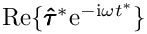 along  where
where  . This requires that
. This requires that
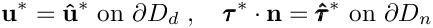
where is the outer unit normal on the boundary.
The stresses and displacements are related by the constitutive equations
![\[ \pmb{\tau}^*=\frac{E}{1+\nu}\left( \frac{\nu}{1-2\nu}(\pmb{\nabla}^*\cdot\mathbf{u}^*)\textbf{I}+ \frac{1}{2}(\pmb{\nabla}^*\mathbf{u}^*+\pmb{\nabla}^*\mathbf{u}^{*{\rm T}})\right), \]](form_18.png)
where 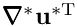 represents the transpose of 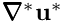.
We non-dimensionalise the equations, using a problem specific reference length,  , and a timescale 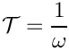, and use Young's modulus to non-dimensionalise the body force and the stress tensor:
, and a timescale 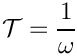, and use Young's modulus to non-dimensionalise the body force and the stress tensor:
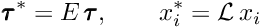
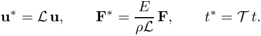
The non-dimensional form of the equations is then given by
![\[ \pmb{\nabla}\cdot\pmb{\tau}+\mathbf{F}=-\Omega^2\mathbf{u}, \ \ \ \ \ \ \ \ \ \ (1) \]](form_25.png)
with the non-dimensional constitutive relation,
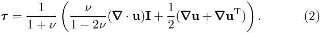
The non-dimensional parameter
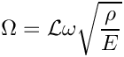
is the ratio of the elastic body's intrinsic timescale, 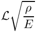, to the problem-specific timescale, , that we used to non-dimensionalise time. 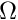 can be interpreted as a non-dimensional version of the excitation frequency; alternatively/equivalently 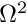 may be interpreted as a non-dimensional density. The boundary conditions are
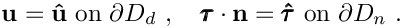
Implementation
Within oomph-lib, the non-dimensional version of equations (1) with the constitutive equations (2) are implemented in the TimeHarmonicLinearElasticityEquations<DIM> equations class, where the template parameter DIM indicates the spatial dimension. Following our usual approach, discussed in the (Not-So-)Quick Guide, this equation class is then combined with a geometric finite element to form a fully-functional finite element. For instance, the combination of the TimeHarmonicLinearElasticityEquations<2> class with the geometric finite element QElement<2,3> yields a nine-node quadrilateral element. As usual, the mapping between local and global (Eulerian) coordinates within an element is given by,
![\[ x_i = \sum_{j=1}^{N^{(E)}} X^{(E)}_{ij} \, \psi_j, \qquad i=1,2, \]](form_32.png)
where  is the number of nodes in the element,
is the number of nodes in the element,  is the
is the  -th global (Eulerian) coordinate of the
-th global (Eulerian) coordinate of the  -th
-th Node in the element, and the  are the element's shape functions, defined in the geometric finite element.
are the element's shape functions, defined in the geometric finite element.
All the constitutive parameters are real. The two components of the displacement field have a real and imaginary part. We store the four real-valued nodal unknowns in the order 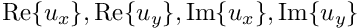 and use the shape functions to interpolate the displacements as
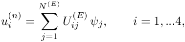
where  is the -th displacement component (enumerated as described above) at the -th
is the -th displacement component (enumerated as described above) at the -th Node in the element.
A test problem: Oscillations of an elastic annulus
We consider the time-harmonic axisymmetric deformation of a 2D annular elastic body that occupies the region 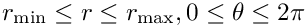, shown in the left half of the sketch below. We impose a constant-amplitude axisymmetric displacement 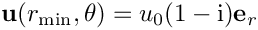 on the inner boundary and a constant-amplitude pressure load 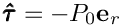 on the outer boundary. ( 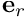 is the unit vector in the radial direction).

It is easy to find an analytical solution of this problem by working in polar coordinates and exploiting the axisymmetry of the solution by writing the displacement as  . The radial displacement 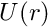 is then governed by
. The radial displacement 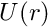 is then governed by
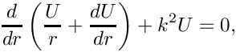
where 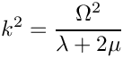 and
![\[ \lambda = \frac{\nu}{(1+\nu)(1-2\nu)} \qquad \textrm{and} \qquad \mu = \frac{1}{2(1+\nu)} \]](form_49.png)
are the non-dimensional Lame parameters. The solution of this equation is given by:
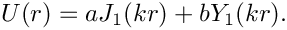
where 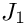 and 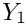 are Bessel functions of the first and second kind, respectively. The amplitudes  and
and  can be found using the boundary conditions on 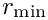 and 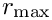. In the driver code discussed below, the (lengthy) expressions for and in terms of the problem parameters can be found in the
can be found using the boundary conditions on 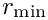 and 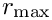. In the driver code discussed below, the (lengthy) expressions for and in terms of the problem parameters can be found in the GlobalParameters::exact_u() function.
We note that even though a relatively simple analytical solution (in polar coordinates!) exists for this problem, it is a non-trivial test case for our code which solves the governing equations in cartesian coordinates. However, to show that we can also compute non-trivial solutions, we also consider the case where the annular region has a "gap" and therefore occupies only a fraction (90%) of the circumference. This creates two additional boundaries (the radial lines bounding the "gap" and we subject these to the same pressure that acts on the outer boundary, as shown in the right half of the sketch above.
Results
The figures below show "carpet plots" of the real and imaginary parts of the exact (green) and computed (red) horizontal displacement (  – the plots for 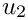 obviously look very similar) for the continuous coating and 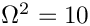, 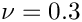, 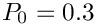, 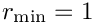 and 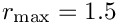.
– the plots for 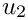 obviously look very similar) for the continuous coating and 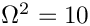, 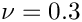, 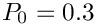, 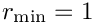 and 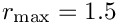.
To demonstrate that the resulting displacement field is indeed axisymmetric, here is a plot of the real part of the radial displacement, 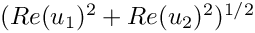.

Finally, here is a plot of the real part of the horizontal displacement for the case when there is a 10% "gap" in the annular region. The presence of the gap clearly breaks the axisymmetry of the solution and creates waves that propagate in all directions:

Unsurprisingly, we are not aware of an analytical solution for this problem.
Global parameters and functions
As usual, we define all non-dimensional parameters in a namespace where we also define the displacement to be applied on the inner boundary, the traction (pressure) to be applied on the outer boundary, and the exact solution (which we don't list here because it is very lengthy).
We also define the output directory and the number of elements in the mesh.
The driver code
We start by defining command line arguments which specify the number of elements in the mesh and indicate the presence or absence of the "gap" in the coating.
The code performs a parameter study in which we compute the solution for a range of pressures. We specify the pressure increment and the number of steps to be performed, parse the command line arguments and document them.
Next, we create the problem (discretising the domain with nine-noded quadrilateral elements),
and perform the parameter study:
The problem class
The Problem class is very simple. As in other problems with Neumann boundary conditions, we provide separate meshes for the "bulk" elements and the face elements that apply the traction boundary conditions. The latter are attached to the relevant faces of the bulk elements by the function create_traction_elements().
The problem constructor
We begin by building the "bulk" solid mesh, specifying the presence of the gap (and its width) if necessary. If there is no gap, the mesh is periodic; see Comments for a more detailed discussion of how the mesh for this problem is constructed.
It is always a good idea to have a look at the mesh and its boundary enumeration:
We loop over the elements and specify the relevant physical parameters via the pointer to the tensor of constitutive parameters and the (square of the) non-dimensional frequency,
Next we create the mesh that contains the FaceElements that apply the traction boundary conditions, and combine all meshes into a global mesh:
We apply the displacement boundary conditions by pinning the real and imaginary part of the two displacement components at all nodes on boundary 0. We then impose a purely radial displacement on the real and imaginary parts of the displacement field, using the function defined in the Global_Parameters namespace:
Finally we assign the equation numbers and specify the output directory:
The traction elements
We create the face elements that apply the traction on the outer boundary (boundary 2). If there is a gap in the annular region we also apply the pressure loading on boundaries 1 and 3.
Post-processing
As expected, this member function documents the computed solution.
Comments and Exercises
Comments
- We did not discuss the mesh generation in detail here: The mesh is created by straightforward overloading of
oomph-lib'sexisting rectangular quad mesh – the constructor simply adjusts the nodal positions (exactly as suggested in the "Not-so-quick" guide.) A little bit of extra work is required to enforce periodicity on the mesh for the case without a gap in the annular region because two of the boundaries in the original mesh then overlap. How this is dealt with is discussed in another tutorial.
- If you inspect the driver code you will notice that it also contains relevant code to perform spatially adaptive simulations of the problem – the adaptive version of the code is selected with
#ifdefs. Dealing with the periodic boundary conditions for spatially adaptive meshes requires a few additional steps, but they are also discussed elsewhere, so we won't discuss them here.
Exercises
- Change the parameter study performed by the driver code such that the loop varies the frequency parameter . Assess the effect of an increase in on the accuracy of the solution by comparing the computed results against the exact solution at fixed spatial resolution.
- Explore the use of spatial adaptivity in the problem
- for the same parameter study suggested in the previous exercise (increase in )
- for the problem with the "gap" in the annular region.
- Modify the code to exploit at least some of the problem's symmetry, e.g. by solving the problem for the continuous annulus in a quarter of the original domain, 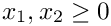, say, using appropriate symmetry boundary conditions along the coordinate axes.
Source files for this tutorial
- The source files for this tutorial are located in the directory:
demo_drivers/time_harmonic_linear_elasticity/elastic_annulus - The driver code is:
demo_drivers/time_harmonic_linear_elasticity/elastic_annulus/time_harmonic_elastic_annulus.cc
PDF file
A pdf version of this document is available.